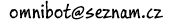

Petr Laštovička
Zde si můžete stáhnout několik mých programů. Všechny zde uvedené programy jsou zdarma a vztahuje se na ně GNU General Public Licence. To znamená, že když jakoukoli část mého zdrojového kódu použijete ve svém programu, pak od tohoto vašeho programu musíte také zveřejnit celý zdrojový kód.
Programy fungují na všech desktopových a serverových verzích Windows (2000, XP, Vista, 7, 8, 10, 11, ...). Většinu z nich lze také spustit na Linuxu, když máte nainstalované Wine (viz appdb.winehq.org).
(Sokoban, Piškvorky, Solitaire, Miny, Logik, Patnáctka, Bludiště, Sudoku, ....)
(přehrávač videa, precizní kalkulačka, klávesové zkratky, programovací jazyk Karel, simulace silniční dopravy, ....)
Odkazy:
PhoneCopy - jednoduché zálohování, synchronizace a správa dat z telefonu
xplorer2 - správce souborů se dvěma panely a záložkami
RTCW:Enemy Territory - akční multiplayer hra, která je zdarma a obsahuje více než 500 map. Po instalaci omni-bota můžete hrát sami proti počítači a nastavit si obtížnost, jaká vám vyhovuje.
Poslední změna 15.10.2022

 English ,
English ,  Česky
Česky